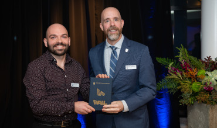

My principal research goal is to improve our understanding of the relationship between plants and their environment.
Hello, and welcome to my website! My name is Milos Simovic, and I am currently a PhD candidate in Botany at The University of British Columbia.
I joined UBC in 2020 in order to work with my advisor and collaborator, Sean Michaletz, on the physiology of yellow-cedar decline.
But why is physiology relevant for yellow-cedar decline?
Yellow-cedar is an ecologically, culturally, and economically significant tree species native to the Pacific Northwest region of North America.
It is currently experiencing significant climate change-induced decline, with ~4,000 sq. km of yellow-cedar forests affected across Alaska and British Columbia.
It is hypothesized that regional warming is leading to loss of insulating snowpack in yellow-cedar habitats, which exposes their roots to lethal freezing injuries.
Yet, the exact nature of these injuries, and the sequence of physiological effects they trigger leading to whole-plant death, remain poorly understood.
Additionally, neighboring tree species do not appear to be experiencing similar patterns of decline, highlighting the need for species-specific research.
The primary aim of my PhD research is to uncover the mechanism linking climate-change induced loss of snowpack to yellow-cedar decline.
My MSc research focused on ecophysiology, functional trait ecology, and ecosystem services of urban trees.
I conducted my MSc research with Kevin Mueller at Cleveland State University.
You may learn more about my PhD and MSc research projects below!
Download my CV here.
Current Projects
How do physical factors shape axial xylem morphology?
Xylem conduit morphology is shaped by two fundamental constraints imposed by vertical sap transport: minimizing hydraulic resistance and preventing conduit wall collapse.
Nehemiah Grew observed that roots have wider conduits than stems nearly 350 years ago, and there has been much research since showing that conduits widen predictably from tips of plants to their base in order to minimize resistance.
But what about thickness-to-span ratio, or the ratio of double wall thickness to conduit diameter (i.e., conduit reinforcement against collapse)?
Thickness-to-span ratio should decrease from tip to base, in tandem with water potential, but there is comparatively little evidence supporting this prediction.
My PhD advisor, Sean Michaletz, and I, show that both of these patterns occur in trees, and that thickness-to-span ratios are nearly always higher than the critical collapse limit predicted by a mathematical model.
This work is currently in review at Plant, Cell & Environment.
Freeze-thaw embolism or freezing lysis? What is the root cause of yellow-cedar decline?
Freeze-thaw cycles may injure plant organs through embolism formation (i.e., reduction of sap flow and consequent physiological stress) or direct freezing injuries (i.e., by causing cell lysis through the formation of ice crystals).
It is hypothesized that yellow-cedar roots are particularly sensitive to freeze-thaw cycles when snowpack is absent.
However, the mechanism of injury is poorly understood.
This work aims at testing which of these mechanisms (freeze-thaw embolism and cell lysis) is likely responsible for yellow-cedar decline.
The work is currently in preparation, with aim of submitting it to New Phytologist for publication.
Comparative hydraulics of subalpine conifers in response to snow removal - is yellow-cedar "behaving" differently?
Yellow-cedar decline is hypothesized to be driven by loss of snowpack.
In this study, we aimed to replicate climate-change loss of snowpack at a field site in the North Shore mountains of British Columbia.
We selected six individuals belonging to five species of conifers (including yellow cedar) which co-occur with yellow-cedar along the decline range.
Snowpack surrounding half of the individuals of each species was fully removed at regular intervals during winter of 2022 - 2023.
We measured predawn and midday water potential and native loss of hydraulic conductivity in branches and roots each month, and a host of environmental variables (e.g., air and soil temperature, soil moisture, etc.).
We hope to answer the question as to how loss of snowpack affects the hydraulic functioning of these conifers, and if yellow-cedars exhibit a unique response.
This work is currently in preparation, with aim of submitting it to Global Change Biology for publication.
From tropics to treeline: MST and plant mortality.
I am collaborating with the folks from The Forest MacroSystems Network
on a project aimed at expanding Metabolic Scaling Theory for predicting global plant mortality. This work is led by Isaac Borrego and is currently in review at Ecology Letters.

A novel method of balancing datasets via bootstrapping
Much of ecology is focused on quantifying scaling relationships using empirical data and comparing results across datasets or with theoretical predictions.
This is typically accomplished by fitting linear models to log-transformed data, estimating the slope and 95% confidence intervals (CIs), and evaluating whether these CIs include empirical or theoretical values.
The accuracy of slope estimates depends critically on the distribution of data across the range of the abscissa.
When data are unevenly distributed (as biological data often are), with observations concentrated in some portions of the range, slope and CI estimates become biased toward regions of higher data density.
This imbalance increases the risk of type I or II errors, potentially leading to erroneous conclusions about the agreement of data with empirical or theoretical expectations.
We introduce a novel bootstrapping approach to address data imbalance in biological scaling analyses that improves the accuracy of slope and CI estimates.
This method enables more precise comparisons with both empirical and theoretical values.
This work, authored by myself and my PhD advisor Sean Michaletz, was published in Global Ecology and Biogeography and can be accessed here.

Size and functional traits modulate urban tree performance and capacity for delivering ecosystem services.
Recent empirical work by Gibert et al. 2016 and theoretical work by Falster et al. 2018
postulates that the relationship between functional traits and plant performance is strongly modulated by plant size. My MSc advisor, Kevin Mueller, and I, tested this hypothesis in an urban setting, and found strong support for it.
Moreover, we found a strong relationship between key functional traits (e.g., LDMC and wood density) and ecosystem services such as C sequestration, suggesting that the trait-performance framework can be applied to solve practical problems such as maximizing tree-based ecosystem services in urban areas.
This work has been published in the journal Functional Ecology and can be accessed here. Data collection on this project is ongoing, so stay tuned for more!
News

Wall Research Award 2024
I am thrilled to announce that I have been awarded the 2024 Wall Research Award! This prestigious award, generously provided by Dr. Peter Wall through the Peter Wall Legacy Awards program, offers up to two years of funding for my PhD research.
I am incredibly grateful to have been selected and look forward to using this funding to complete my PhD and publish my dissertation chapters. Big thanks also to Martin Dee for capturing the moment when Dr. Benoit-Antoine Bacon (president of UBC!) kindly handed me the award.


{kind=link}
{kind=link}
{kind=link}
{kind=link}
{kind=link}
{kind=link}